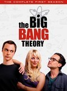
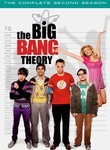
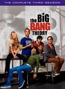
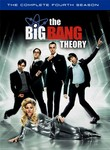
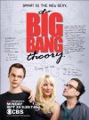

The Big Bang Theory
Stephen Klancher
...has seen 64
...has seen 1.1 hours
...has not seen 3.6 hours

Timeline
Most Recent:
The Prestidigitation Approximation
...has seen 64
...has seen 1.1 hours
...has not seen 3.6 hours
Timeline
Most Recent:
The Prestidigitation Approximation



Stephen Klancher: January 26, 2009 
Sheldon's fake smile is amazing/terrifying! "We're going to see our friend, not kill Batman."
Stephen Klancher: January 29, 2009
Great episode. Star Trek, Star Wars, a Bakersfield mention?, the Mars Rover...
Stephanie: "How was your day?"
Leonard: "Well I'm a physicist, I thought about things..."
Stephanie: "That's it?"
Leonard: "Well, I wrote some of it down..."
Stephanie: "How was your day?"
Leonard: "Well I'm a physicist, I thought about things..."
Stephanie: "That's it?"
Leonard: "Well, I wrote some of it down..."
Stephen Klancher: January 31, 2009
That is a really good episode. Sheldon is trying to speak colloquially and it's awesome.
Stephen Klancher: February 1, 2009
Any Trek fan, given the chance, would grow their own Leonard Nemoy.
Stephen Klancher: March 10, 2009
I own the chair that I was rocked in as a baby. That chair is my 0,0,0,0.
Stephen Klancher: March 24, 2009
Not without amusement, but Summer Glau in this episode was probably the most boring use of a guest star ever.
Stephen Klancher: March 24, 2009
He has a working knowledge of the entire universe and everything it contains.

Stephen Klancher: October 27, 2009
"Ok, I get that a chicken made you his bitch, but the cricket thing I don't buy..." Also that was a good comic bet. I'd like to have the Fantastic Four issue with the first appearance of Silver Surfer, and though I don't know much about Flash that sounded cool too. Mmm comics. Haven't read many in a long time, but it's a deep part of my nerd heritage.
Stephen Klancher: October 28, 2009
This was hilarious episode for so many reasons... the positive reinforcement was great.
Stephen Klancher: October 30, 2009
"For me." - "Those are very cogent and reasonable conditions. I reject them all." Also, you're gonna need a montage.
Stephen Klancher: November 7, 2009
Seeing Leonard watch football is one of the most painful social situations I've vicariously experienced.
Stephen Klancher: August 22, 2010
I'm not sure how I skipped over several episodes... Leonard and Penny buying Sheldon the robot was a funny scene.
Stephen Klancher: August 28, 2010
"I never admit defeat. On an unrelated note I am never getting out of this bed again."... "What's that chemical?" "Mountain Dew, mmm, refreshing..."
Stephen Klancher: January 13, 2010
I'm surprised they didn't show Leonard go to the psychic. That could have been a very funny scene.
Stephen Klancher: February 13, 2010
(H + (pigs-p)) (Bow + Zone) (Pear Tickle) = Higgs Boson Particle
Stephen Klancher: March 28, 2010
Sheldon working with Penny was funny... also, I was very amused with the disco-rollerskating freeze frame while playing the song One Night in Bangkok at the end.
Stephen Klancher: March 28, 2010
Rupert Murdoch is up there with Darth Vader because FOX killed Firefly... I like Sheldon's "match the person with the destination" Powerpoint.
Stephen Klancher: April 23, 2010
Even more amusing since I just saw Stan Lee last weekend. Sheldon's first words on being put in a jail cell: "That's my spot."
Stephen Klancher: September 2, 2010
"I am the William Shatner of Theoretical Physics." "I don't feel different... this alcohol is defective"..."Here, try this one."
Stephen Klancher: September 6, 2010
Good Sheldon episode. Sheldon:...my allegiance should be to male comrades before women who sell their bodies for money. Leonard: Is it possible he said "Bros before Hoes?"


The Change Constant / The Stockholm Syndrome (2019) Airs on 2019-05-16
S12 - E23 of The Big Bang Theory
S12 - E23 of The Big Bang Theory